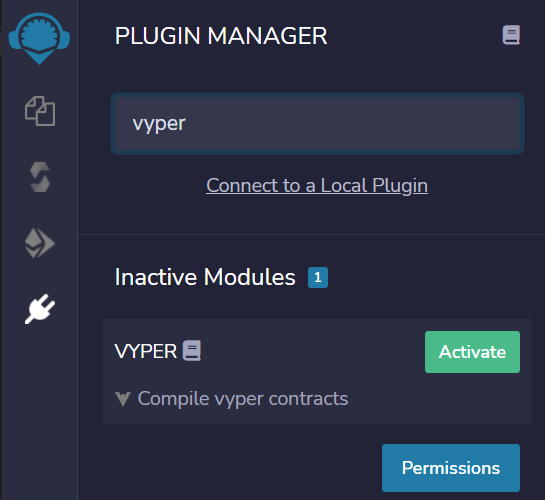
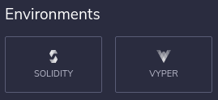
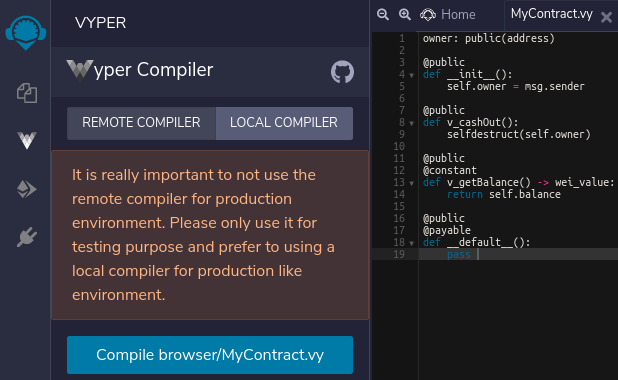
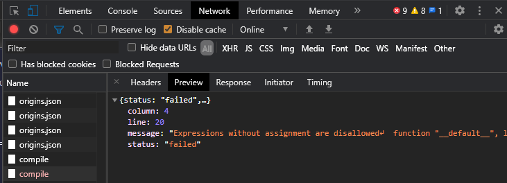
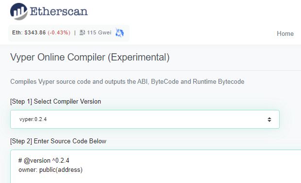
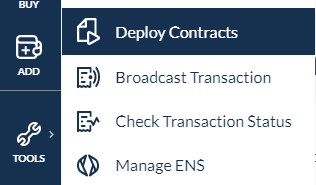

In solving the levels of the CTF, we have seen the pitfalls of using a programming language like Solidity to develop smart contracts. To address this, one language that has been proposed is Vyper. In this lab, you will see how our initial smart contract MyContract can be written in Vyper and deployed on Ethereum. For more resources on Vyper go here. For an on-line Vyper interpreter, go here.
What you'll learn
- Basic use of Remix for deploying Vyper code to Ethereum
What you'll need
- A browser with Metamask installed
- A wallet managed by Metamask with privacy settings disabled
- A Ubuntu 18.04 VM
We will be deploying a Vyper version of the prior Solidity contract MyContract. As before, MyContract takes in ETH (the cryptocurrency used for Ethereum transactions). Anyone can send ETH to this contract and anyone can destroy it. Upon destruction, all ETH from the contract is sent to its owner (the wallet that has deployed the contract).
# @version ^0.2.4
owner: public(address)
@external
def __init__():
self.owner = msg.sender
@external
def v_cashOut():
selfdestruct(self.owner)
@external
@view
def v_getBalance() -> uint256:
return self.balance
@external
@payable
def __default__():
pass- Log into your Metamask account and ensure you are using Ropsten

- Visit the Remix IDE at https://remix.ethereum.org
- Activate the Vyper plug-in via the Plugin Manager.
 - Click "Vyper" for your environment. The environment is similar to that of Solidity.

- Go back to the Remix file explorer and paste the code into a file in the IDE
- Click on the Vyper compiler icon to bring up the compiler. If you get a "404 Not Found" error, disable the plug-in, reload the site, then re-enable the plug-in. Continue to Option #2 if the issue persists.
- Click on "Remote Compiler" and compile the contract using the remote compiler. 
- Note that for the remote compiler, the UI sends the contract code via an asynchronous HTTP request to https://vyper.live/compile . Errors are returned in JSON and can be found via the Developer Tools by clicking on the "compile" request.

- You may also use a local compiler to produce the EVM bytecode. To do so, perform the steps for installing the Python Vyper package in Option #2, then run
vyper-serve. - After compilation, click on the "Deploy & run transactions" tab
- Deploy the contract
Remix is one of several options for compiling Vyper contracts. Another option is via the Vyper package in Python. To try this method out. Bring up your Ubuntu 18.04 VM from prior labs. Then, create a virtual environment and install the Vyper package:
virtualenv -p python3 env
source env/bin/activate
pip install vyper==0.2.4Then, create a file MyContract.vy that contains the MyContract code from before. Compile the contract to obtain the contract's bytecode.
vyper MyContract.vyWe will also need the contract's ABI. To generate this, perform the following:
vyper -f abi MyContract.vyIf you wish to use the "Local compiler" option of Remix, you can use the following command which will put up a web server that takes in compilation requests from the web browser running on the Remix site.
vyper-serveAnother alternative for compiling Vyper is the Vyper Online Compiler at https://etherscan.io/vyper. The site supports multiple versions of the compiler and contains links to several example Vyper contracts.
Enter your MyContract code in the "Source Code" window and then Compile it.

Scroll down to the Bytecode to show that the bytecode and ABI generated are the same as in the Python Vyper compilation. These will both be needed for subsequent steps.
Using the Bytecode and ABI from the compilation step, we will now deploy the contract via MyCrypto. Visit MyCrypto and under "Tools", navigate to "Deploy Contracts". 
Ensure that you set the Network to Ropsten.

Copy the Bytecode from the previous step and "Deploy Contract" using your Metamask account
Perform the following:
- Take a screenshot of your Etherscan transaction for creating the contract for to include in your lab notebook
- Add value to the contract. Take a screenshot of this transaction on Etherscan (showing the transfer of ETH from your wallet to the contract address)
- Access the
v_cashOutfunction to destroy the contract and receive the funds back again. Show the transaction that sends the funds back to your wallet on Etherscan
Vyper builds in underflow and overflow checks on arithmetic operations when they are compiled to EVM bytecode. While this adds overhead, it can prevent disastrous errors that can lead to significant ETH being lost. To demonstrate this, consider the contract below:
# @version ^0.2.4
owner: public(address)
instructor: public(address)
commission: public(uint256)
funds: public(uint256)
@external
def __init__():
self.owner = msg.sender
self.instructor = 0xe9e7034AeD5CE7f5b0D281CFE347B8a5c2c53504
self.funds = 0
self.commission = 1000
@external
@payable
def __default__():
self.funds += msg.value
@external
def v_cashOut():
send(self.instructor, self.commission)
selfdestruct(self.owner)
@external
def v_reduceCommission():
self.commission -= 500
@external
@view
def v_getBalance() -> uint256:
return self.funds- What scenario will cause an underflow to occur?
Deploy the contract.
- Take a screenshot of your Etherscan transaction for creating the contract for to include in your lab notebook
Then, call (fallback) to add funds to the contract. Use repeated calls to v_reduceCommission to show how Vyper differs from Solidity in how it handles arithmetic underflow
- Show screenshots of the console within Remix of successful and unsuccessful calls to the function.
Congratulations!
You've created, deployed, and interacted with smart contracts written in Vyper. While the language is a safer one to use, it is not being used very prevalently yet. You can change this.